Общий процесс исследования чипов в домашних условиях, шаг за шагом, собранный из опыта проектов emu-russia: breaks, SEGAChips, dmgcpu, Deroute, mappers, SovietChips, ula, psxcpu, Patterns — включая их набитые шишки. Начали новый чип — идите по шагам.
Что делаем:
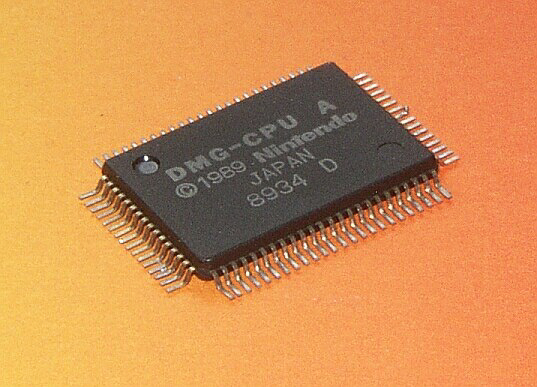
90048 на
кристалле соответствует маркировке L9A0048; разные ревизии могут отличаться
разводкой M1/M2 настолько, что «перенести трассировку» нельзя — только заново.90048;
новые ревизии «пересобраны» из верилога — сверять трассировку между ними бессмысленно.
Подробно — в methods.md.


lap1, lap2, M1, M2...
(psxcpu снимал M1 трижды: 20x-прогон оказался «практически бесполезен», 50x — пригоден).
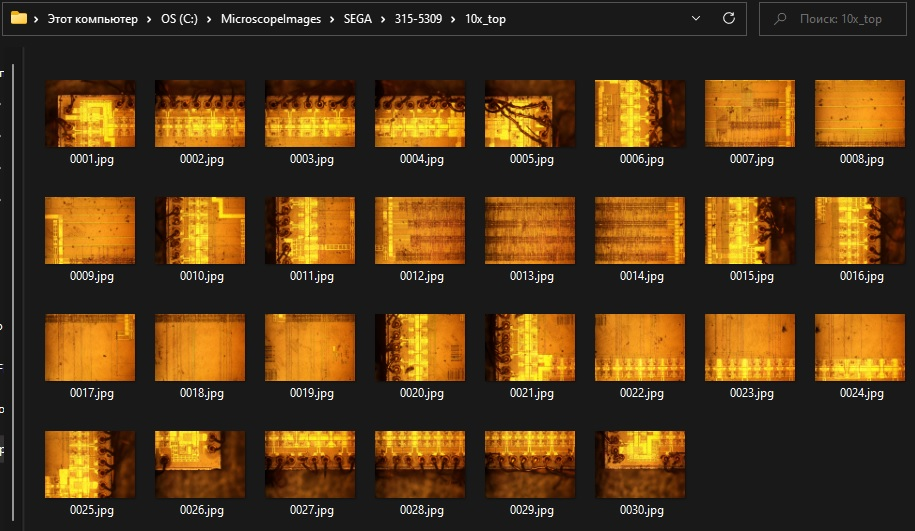
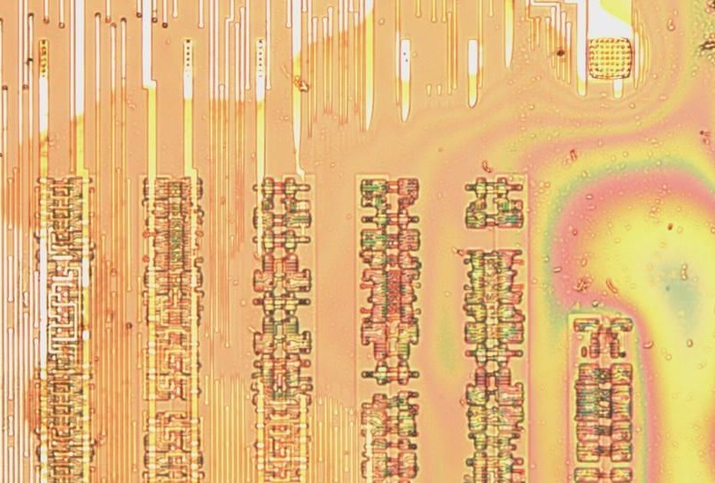
0001.jpg ... NNNN.jpg на каждый слой.Plugins → Stitching → Grid/Collection stitching.{iiii}.jpg, порядок «змейкой» (сверху-вниз или снизу-вверх —
как снимали), Tile overlap подбирается экспериментально (автор methods.md ставит 25
почти всегда; docs рекомендуют 5–20).Run — «магия» и единая картинка.
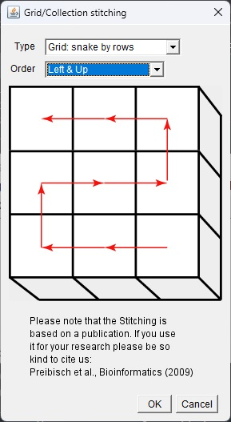
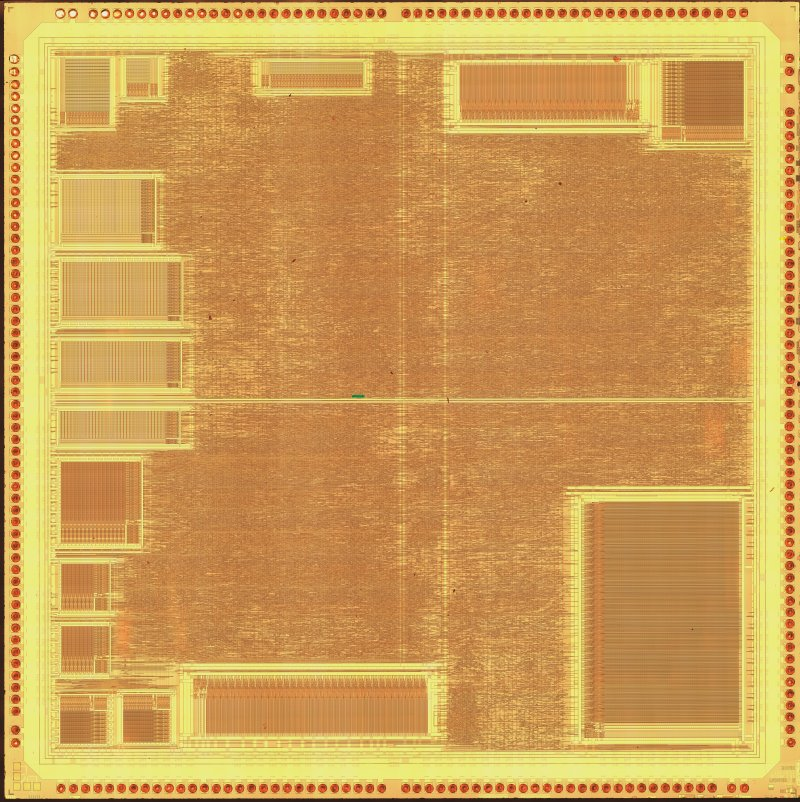
poly / active / M1 / M2...
(lap1-4 в dmgcpu, M1 Lap1/Lap2 в psxcpu).


ulabase.v).cells.md фото каждой ячейки: Yamaha
YM_Cells/YM6_Cells («двухэтажные» ячейки) в SEGAChips, CoreWare-ячейки
в psxcpu, cells.md в dmgcpu и mappers (там же — разбор по names:
dec→dec4, dec2→dcd2 — именование сразу с префиксом функции).
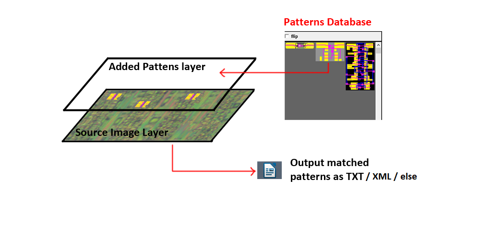

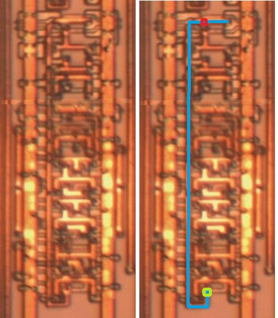
cells.md + patterns_db.ports.md → netlist/m1.xmlz → BG/FSM/MUX... в VDP SEGAChips).x, чтобы восстановление провода на них не обрывалось.Lambda: 6.0,
Vias Size: 2, Wire Size: 3..xmlz) — это и есть «база» нетлиста.
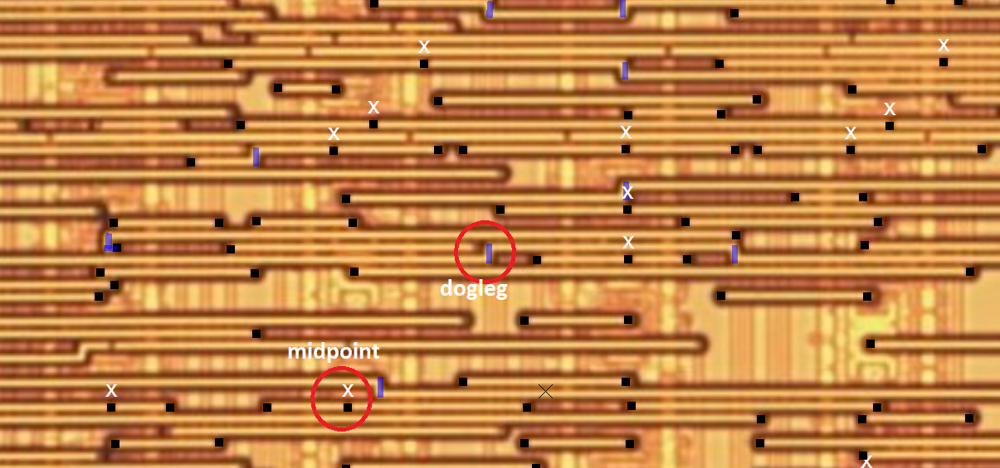

chip.v с сетями оригинала, компилируемый стенд.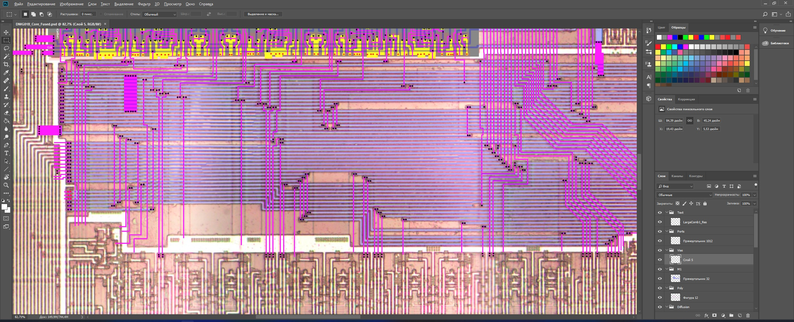
ulasim.py → ula_waves.vcd в ula, waves-страницы wiki breaks).vi53.circ) → Verilog (wr_edge.v) → PDF-отчёт (SovietChips).
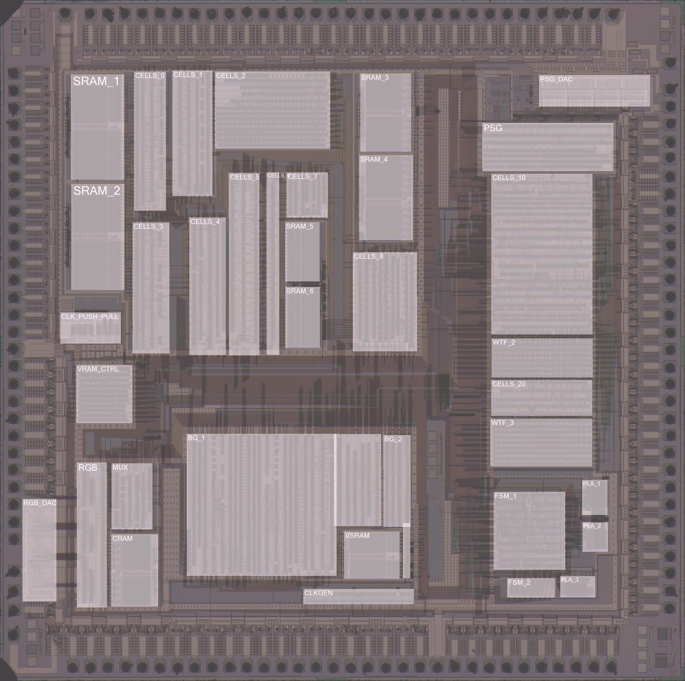
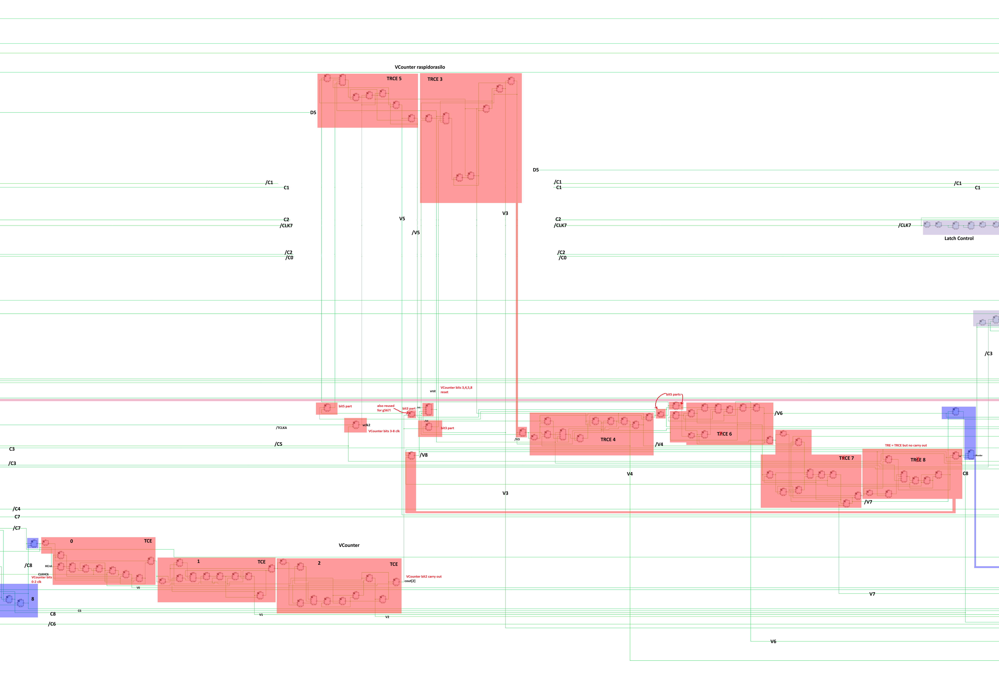
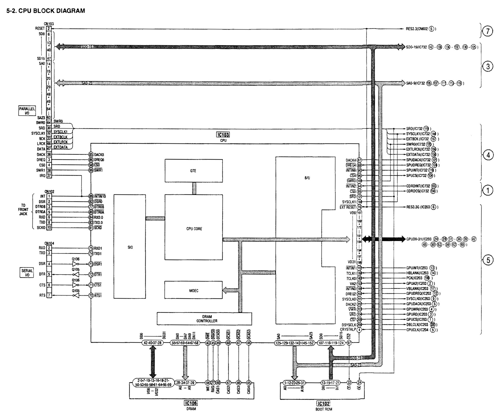
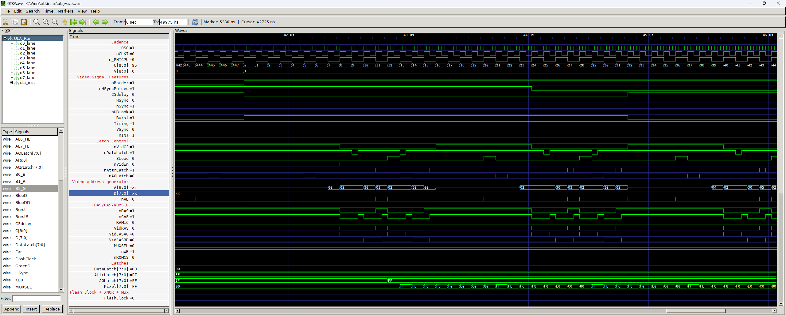
ula.gtkw), logisim-модели ячеек
(mappers), «ppu standalone testbench» в breaks.+parameter=value для параллельных прогонов симуляции).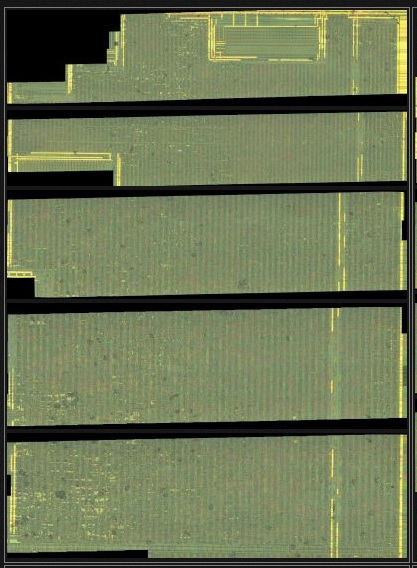
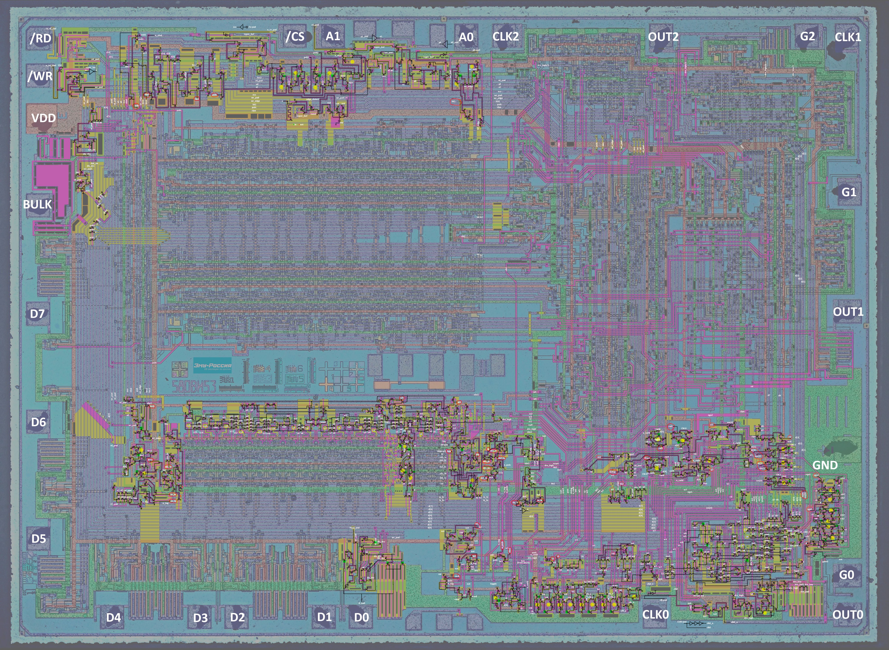
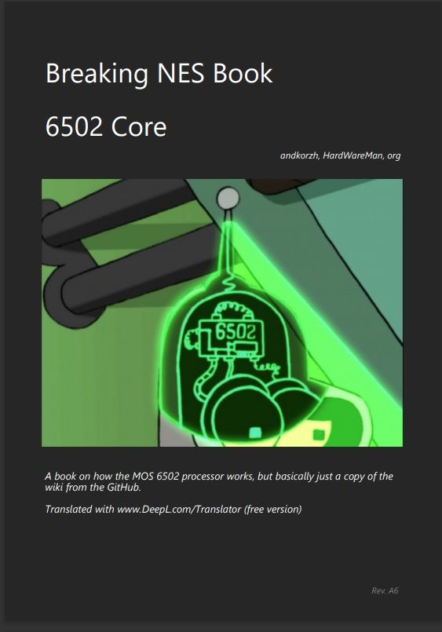
[ ] 0 Цель: транзисторы / ячейки / вентили / обзор? Референсы собраны?
[ ] 1 Чип/донор найден, ревизия зафиксирована (маркировка + tattoo)?
[ ] 1 Чужие датасеты проверены (siliconpr0n / visual6502 / GDrive / forums)?
[ ] 2 Декапсуляция: термическая или HF? Безопасность обеспечена?
[ ] 3 Съёмка: змейка, перекрытие 5-20%, моторизованный стол?
[ ] 4 Сшивка Fiji -> Master Dataset, уменьшенное рабочее изображение?
[ ] 5 Все слои сняты и рассортированы (poly/M1/M2...)?
[ ] 6 Библиотека ячеек собрана (cells.md + patterns_db)?
[ ] 7 Нетлист в Deroute: pads -> слои -> модули? XML сохранён?
[ ] 8 Verilog die-perfect экспортирован, компилируется?
[ ] 9 Схема отрисована в EDA (PlanAhead)?
[ ] 10 Модули названы, таблицы сигналов заполнены, waves сняты?
[ ] 11 Симуляция/тесты пройдены? Кросс-чек с сообществом? Unverified помечены?
[ ] 12 Wiki/разделы с прогресс-таблицей, два языка, issues заведены?